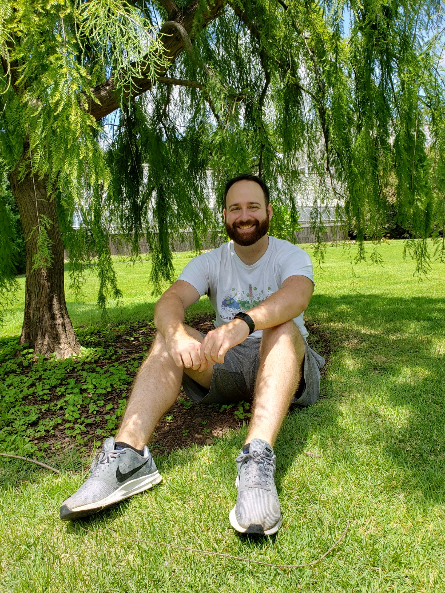

Hi, I'm Daniel Bays
Welcome to my personal space on the web. I am passionate about front-end development, design, and creating user-friendly web experiences.
Here are a few things about me:
- I'm an aspiring front-end developer on a mission to master coding languages like HTML, CSS, and JavaScript. I believe in the power of web development to create beautiful and functional digital experiences.
When I'm not immersed in the world of coding, you'll likely find me cheering passionately for the Oregon Ducks football team. Being a devoted fan, I love the excitement and camaraderie that sports bring.
In my downtime, I trade the keyboard for a tennis racket. Playing tennis is not just a hobby for me; it's a perfect way to stay active and unwind.
Join me on my journey as I navigate the intricate lines of code, weave compelling designs, and continue to balance my love for technology with the thrill of sports.
Let's create something extraordinary together!